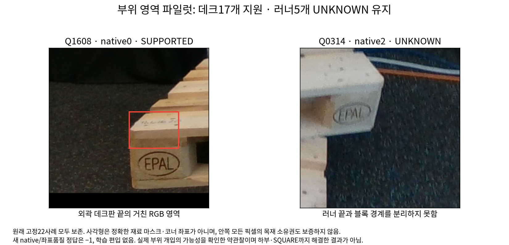

V163 · 부위 가시성과 query 중심을 분리해 확인했습니다
확인한 목표 차이
이전 ‘중심이 대상 팔레트’53개 중 primary 약관찰은 40개 의도한 끝/인접면,12개 같은 팔레트의 다른 부위,1개 미확정이었습니다. 교차40의 불일치를 남기는 혼합 집계에서는39/12/2입니다. 이 두 줄은 같은53개에 다른 근거 구성을 적용한 것이며 별도106개 표본이 아닙니다.
부위가 보이면서 중심은 배경인 관찰169개도 있었습니다. 코너는 재료 경계이므로 이를 좌표 오류169개로 해석하지 않습니다. 정확한 물리 코너나3px 품질 정답은 만들지 않았습니다.

아직 설명되지 않은 실패
이전 외부 가림49개 중43개는 새primary에서도 외부 차폐 지지가 있었습니다. 따라서 목표·라벨 차이만으로 모든 전이 실패가 설명되지는 않습니다. 마지막 실제 대조 학습 V162는 공개held 약라벨 가림 검출2/52→3/52, 보임 유지93/102 동일에 그쳤고 미채택입니다. V163에서는 새 학습·인코더·모델 추론을 수행하지 않았습니다.
최근 실제 모델 대조 결과 V162
어디가 모호한가
공통40의 부위 가시성은25개에서 네 기록이 일치했고15개는 달랐습니다. 특히 하부 러너 끝과 블록·상판의 경계를 분리하기 어려웠습니다. 불일치는 미확정으로 보존했습니다.

이 실사 표본은 Euro WOOD만 포함합니다. SQUARE·다른 WOOD형상은 없고 native6도2개뿐입니다. 원래 WOOD/SQUARE/native8 목표는 유지합니다.
다음 개입을 위한 실제 부위 영역
네 기록에서 부위가 보인다고 일치한22개 모두를 추가 확인했습니다.17개의 데크 끝에 거친 영역을 만들 수 있었고,5개의 하부 러너는 별도 재료 끝을 경계 지을 수 없어 UNKNOWN을 남겼습니다. 이 영역도 정확한 마스크나 코너 좌표가 아닙니다.

다음 대조는 의도한 끝 영역을 덮은 COVER와 같은 물체를 옆으로 옮긴 SHAM을 비교하도록 준비합니다. query가 배경인 사례도 포함합니다.5UNKNOWN은 그대로 유지하며, 러너만의 분할 대신 보수적인 끝 후보 영역을 쓸 수 있는지는 별도 검토가 필요합니다. 새 학습 라벨·편입·모델 채택은 아직 없습니다.
기록과 범위
수치·입출력 연결 · 기존 약라벨 교차표 · 영역22개 완료 기록 · 다음 부위 개입의 고정 설계
사용자 평가223장과 공개held45장의 원본·라벨은 이번 진단·학습에 사용하지 않았습니다. PnP와 초기q/L/좌표도 바꾸지 않았습니다. 그래프PNG는 실제 확인했습니다. HTML은 file URL 자동열기가 브라우저 보안정책에 막혀 소스·문법·링크·해시 검사만 수행했고 브라우저 렌더링 완료를 주장하지 않습니다. 최초 목록 저장 실패와 복구·원래 판독·불일치 기록은 보존했습니다.